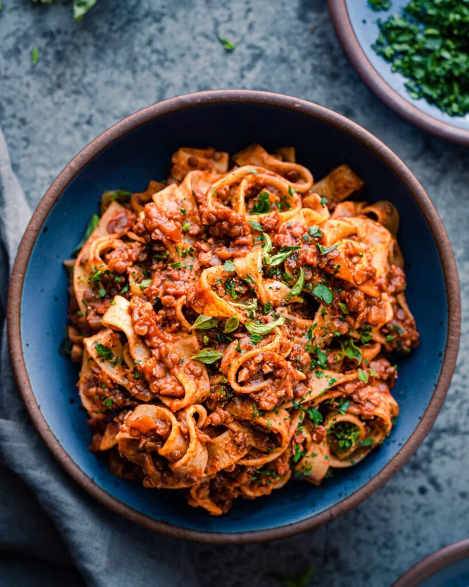

Lentil Bolognese

Description:
A guilt free version of the pasta dish you grew up loving, vegan, gluten-free, and made from whole foods:
- 1 1/2 tbsp olive oil
- 1 large onion, diced
- 1 tsp dried oregano
- 1 stp dried thyme(optional, can sub for more oregano)
- 1 1/2 tsp kosher salt, plus more to taste
- Freshly ground black pepper to taste
- 1(5.3 oz)(150g) tube of tomato paste
- 1/2 cup(120 ml) dry red wine, optional
- 1 cup(185g) red lentils, soaked
- ¼ cup (32g) walnuts (or pecans), crushed finely
- 1 (14.5-ounce/410g) can of crushed tomatoes or whole peeled tomatoes, crushed by hand***
- 12-16 ounces (340-454g) long, wide pasta (such as tagliatelle, pappardelle, or fettuccine;
or tube pasta such as rigatoni or penne rigate; or gnocchi)****
- 1 tablespoon high-quality balsamic vinegar*****
- Flat-leaf Italian parsley or fresh basil, chopped or slivered (optional)
Steps:
- Soak the 1 cup of lentils in water for 30 minutes, or up to 60 minutes.
Meanwhile, prep all the other ingredients (i.e., chop the onions and garlic, chop the walnuts, etc.)
- Heat a 12-inch deep sauté pan or Dutch oven on medium-high heat. Add the olive oil,
and once it’s shimmering, add the onions and season with a pinch of salt.
Stir occasionally and cook the onions until a light brown fond starts form on the surface
of the pan, about 5 minutes. Add a few spoons of water to deglaze the pan, and stir.
Continue cooking the onions, adding more water every few minutes and stirring frequently
to prevent burning, until the onions are softened and golden brown, 9-10 minutes.
- Add the garlic, thyme, oregano, 1 1/2 teaspoons kosher salt, and pepper to taste.
Stir frequently and cook for 60-90 seconds.
- Stir in the tomato paste and cook for 2-3 minutes to caramelize, stirring very frequently,
until it’s darker red in color.
- Optional: If using the red wine, pour the wine into the pan and deglaze, scraping up any
browned bits. Cook for 1-2 minutes, until the smell of alcohol has burned off and the mixture is jammy.
- Pour in the broth to deglaze the pan, stirring any browned bits on the bottom of the pot and
stirring the broth into the tomato paste to combine. Add the lentils and walnuts, and stir
to incorporate. Heat until the mixture comes to a boil, then reduce the heat to medium-low
to maintain a rapid simmer for 20 minutes, stirring occasionally.
- Add the crushed tomatoes and simmer for another 15-20 minutes, or until the lentils
are tender but still al dente, stirring occasionally to prevent burning and sticking.
If using crushed tomatoes, you may need to add a little water or lower the heat
as needed to prevent burning. I prefer to cook for 20 minutes for a more developed flavor.
- Meanwhile, bring a large pot of water to a boil and salt generously. Add the pasta and
cook until just al dente. Reserve a ladle or so of pasta water (may not need it).
Drain the pasta but do not rinse it.
- Taste the bolognese for seasonings, adding more salt and pepper to taste.
Finish with the balsamic vinegar (or sugar)****, and stir to combine.
- Add the hot cooked pasta to the bolognese and toss until well coated in the sauce,
adding a bit of pasta water as needed to ensure the sauce coats the noodles.
- Garnish with chopped parsley or basil, if using.